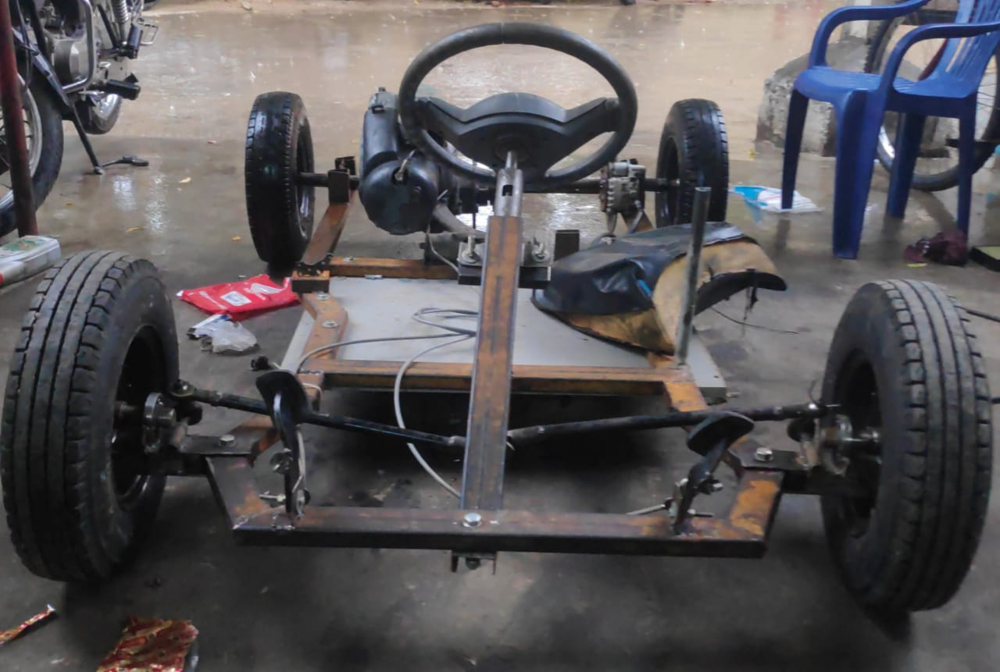
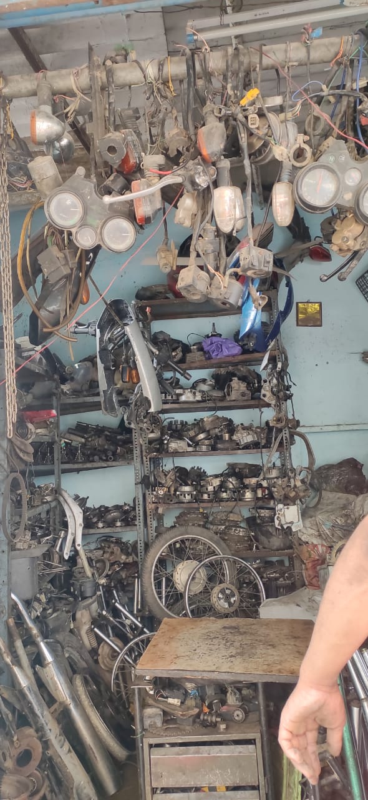

How we built a go kart during a global pandemic
Why we built this go kart
Everone has always driven go karts at the race tracks but always wanted to build one myself. Since the early days of college I and Yaseen always talked about a cool project we could try to do togeather as we both wanted to learn practically rather than just reading for an exam. He already helped me build my Pen plotter before as he knew all about finding the right parts and places. On a random day during lockdown one of came accross a youtube video of a person making his own go kart I shared it to Yaseen. We then discussed if this kind of project is feasible. As he knew from where we could get the engine, the estimated cost and everything, and I have been trying to learn how to use SolidWorks for past year by so that i could use it with my 3D printer I got year ago. With this knowlage of SolidWorks I could make a basic design of the go kart.


Sourching the engine

The first engine we were supposed but got damaged later so we had to buy another engine from the used traders who referbish old engines.

A used second hand chetak was stripped down for as we only wanted the engine from it. Which had to be washed several times to remove years worth of dirt resting on it
Designing the frame of the go kart
This part is the most important part for making anything. Using SolidWorks we started designing the frame with minimum knowledge and referring other frames from Official Racing organizations' go karting manual and homemade builds made by random internet users.
We spent few days designing a bare bone frame but couldn't figure out what dimensions we had to put as we didn't have parts for the go kart

A rough sketch of out go kart model made in SolidWorks.
Next day we went to several markets for search of used parts such as tyres, steering pedals for the accelerator, clutch and brake.
Looking for used parts in markets

We mainly found our steering, pedals, axle in the Afzal Gunj market, Other parts were sourced from the scrap yards of Malakpet and Karmanghat. Although we couldn't find a few parts for our specifications we had to adapt to unconventional ways.
Once we had almost all the parts we wanted we had the biggest challenge. We had to cut our metal rods for our dimensions using the equipment we had and get them welded as we didn't own an arc welding machine.

Both of us taking turns to cut metal plates and rods.

Circles being cut using gas welding equipment for mounts of sprocket and disk brakes.
Boring operation being done for the axle and the hubs of the tyres.
Once we had all the parts ready to assemble we had to cut our rods for the specific dimensions as the chassis is the most important part of any moving vehicle.
Getting the frame Welded.

A 3D model was printed so the welder could understand what we wanted.
By now it was day 15 and most of our work was completed. All we had to do was arrange the cables, pedals, seat the exact positions for the steering, gear rod and some minor quirks.
This was the progress of our kart on day 15
Technical specifications of our kart
We had to improvise and adapt for whatever materials we could locate easily and for a decent price. Most of the parts which were used are refurbished and resold in the vast markets of hyderabad.
- The go Kart is powered by a Chetak 150CC engine which produces about 7.5BHP when new.
- Frame is made out of two 2x3 inch steel rods that were 20 foot long and weighed around 25Kg combined
- The four tyres and the hubs were taken from auto rickshaw.
- Axle which was used is a steering column of a truck which had to be processed on a lathe later to fix the imperfections.
- We used the disk break and its leaver from a Bajaj Pulsar.
- Chain sprocket set is also from a Bajaj Pulsar 220cc variant.
- Finding rose bearings for the front steering column was difficult and expensive in the markets of Afzal Gunj. The brarings used for the tyres are standard chetak bearings.

Problems faced
As there is a pandemic we had to be very careful and it was very risky to go to the crowded markets several times to buy spares. The merchants in the markets always tried to sell their parts at a premium as we are young. Some of the parts which we bought didn't function as intended so we had to buy them again which increased the budget of this project. We had to manage with the tools we and for other
We had to buy a second engine due to our ignorance. The angle wasn't correct and got jammed. Thanks to Yaseen's Father's contacts we could find another refurbished engine. We had make last minute changes in our frame and get some parts of frame re-welded, change position of the seat which increased the budget of this project.
Conclusion
We are proud that we could build a working go kart from scratch. We have learned a lot about sources of finding the parts for the parts and the prices of raw materials. We could never be able to accomplish without a pandemic as we would be trying to listen to a theoretical class in college. We also learned that until we try to do something practically we would not be able to understand the real problems. Before we started this project we estimated that it would be completed within 10 days but it took way longer and was more difficult than expected. We also hope more people try to make something big project as this one or small autonomous vehicle. We should also thank our parents for their support and agreeing to bear the cost of the project during one of the worst economic recession in history.
As this is our first attempt trying to build a complex four wheeler there are few flaws in the design and structure which has room for improvement
We have plans to improve this frame and also convert it into an electric powered vehicle. We wanted to add autonomous capabilities such as anti collision detection using Facebook's "pytorch" which is a platform for machine learning but couldn't be done as this already got a bit too expensive. It's very difficult even for multi national companies to implement such features on manual transmission combustion engines.